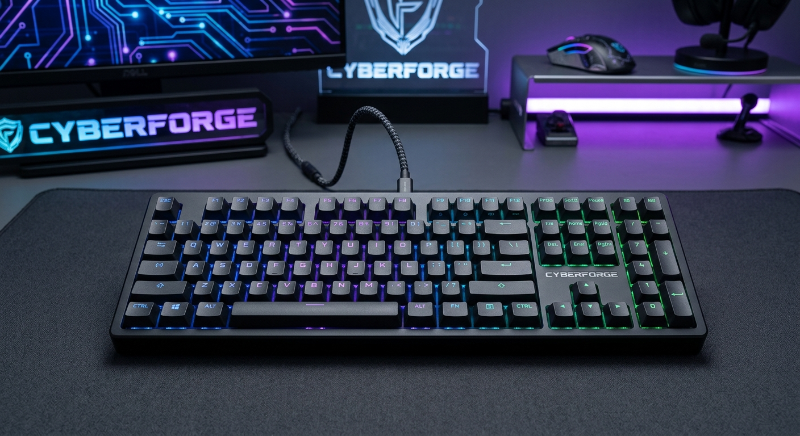
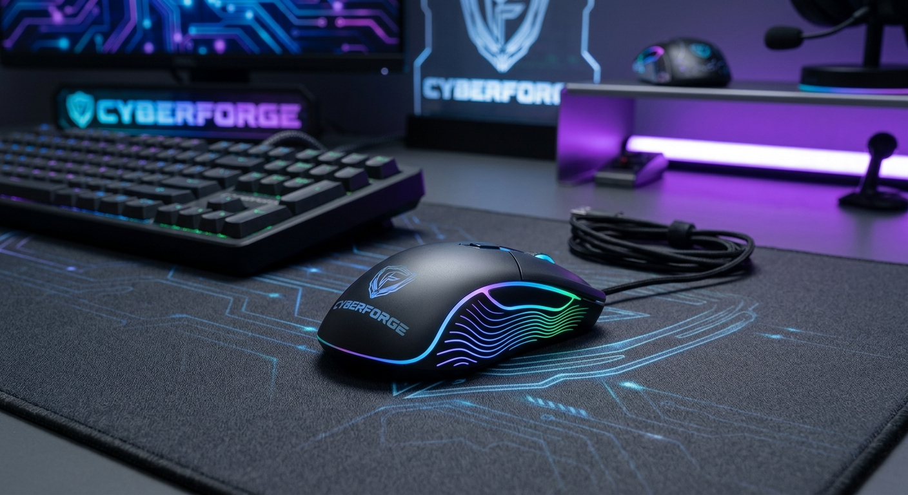
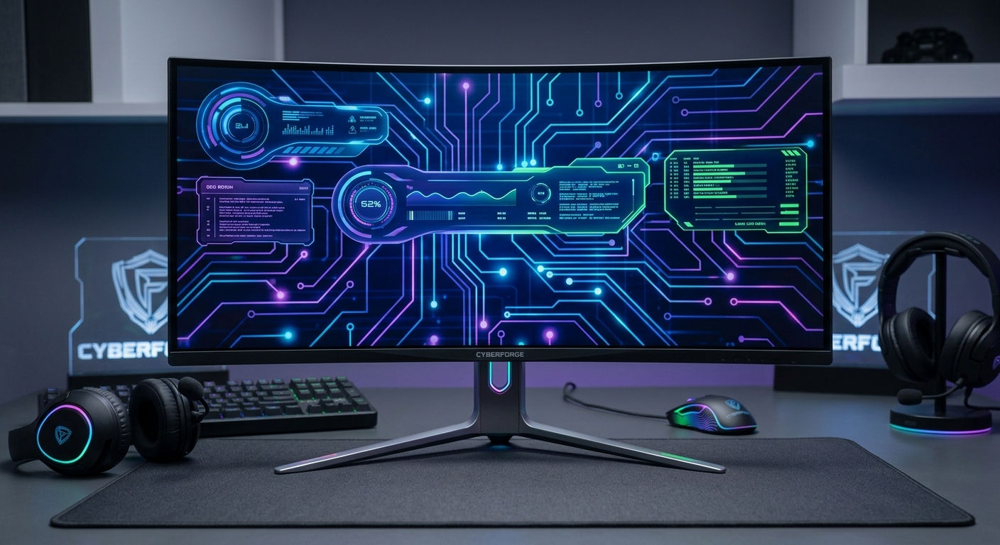
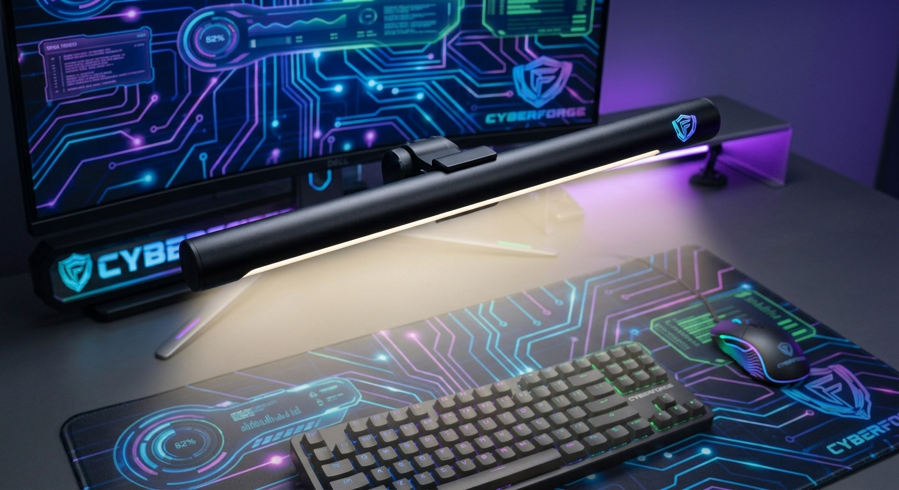
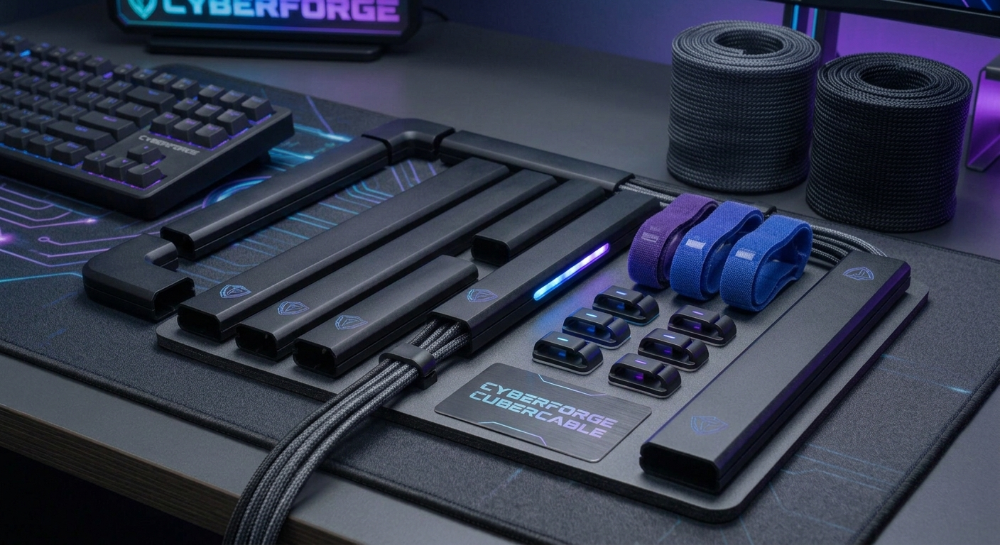

Teclado Mecânico CyberMech RGB
- Descrição: switches brown táteis e silenciosos, corpo robusto em alumínio escovado e sistema de iluminação RGB totalmente personalizável por software.
- Preço: R$ 389,90


Bem-vindo à CyberForge Store, o seu destino definitivo para planejar, equipar e transformar o setup dos seus sonhos em realidade. Nós criamos este espaço especialmente para atender às necessidades de programadores, desenvolvedores de software, criadores de conteúdo e gamers exigentes que não se contentam com o básico e buscam a máxima performance, precisão milimétrica e um estilo único em cada detalhe do seu espaço de trabalho ou arena de jogo.
Nosso catálogo conta com uma seleção rigorosa de periféricos de última geração, componentes de alta durabilidade e acessórios totalmente focados na ergonomia e na eficiência diária. Acreditamos que a ferramenta certa faz toda a diferença no seu rendimento, por isso oferecemos produtos projetados para proporcionar conforto absoluto mesmo durante longas maratonas de código ou gameplay, impulsionando a sua produtividade e levando o seu desempenho ao próximo nível.







